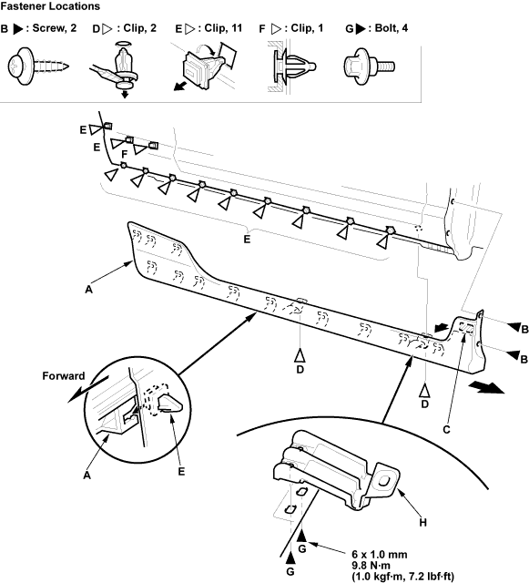

Exterior Trim
Side Sill Panel Replacement
20-9
Remove the side sill panel (A).
On the back of the front wheel arch, remove the screws (B).
On the bottom of the front fender, remove the adhesive tape (C) of the panel from the body with a utility knife. Take care not to scratch the body.
Remove the expansion clips (D).
Slide the panel forward, and remove it. The side clips (E, F) will stay in the body.
Remove the side clips (E) from the body by turning it 45°.
Using a clip remover, remove the side clip (F). Take care not to scratch the body.

If necessary, remove the bolts (G), then remove the panel brackets (H) from the panel.
Replace any damaged clips.
a
a
a